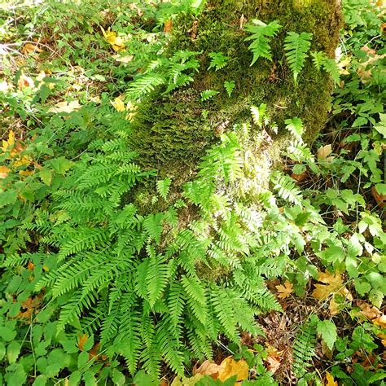
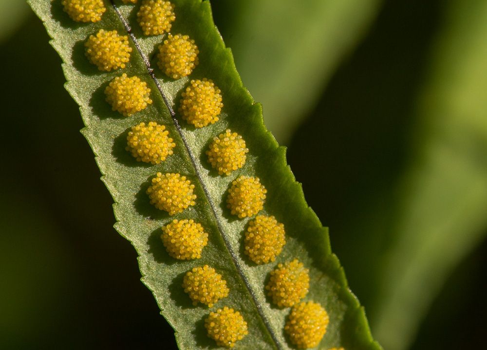

Licorice Fern (Polypodium glycyrrhiza)


Planting
Licorice ferns are epiphytic plants that grow on trees. Here are some guidelines for planting licorice ferns:
- Find a suitable tree with rough bark, such as a cedar or fir.
- Place the fern in a crevice or fork of the tree trunk.
- Make sure the fern's roots make contact with the tree bark.
- Provide regular moisture to the fern, especially during dry periods.
Usage
Licorice ferns have cultural and medicinal uses:
- The rhizomes of the fern have a licorice-like flavor and can be chewed or brewed as tea.
- Licorice ferns have cultural significance for Indigenous communities and are used in ceremonies.
- The plant has been used medicinally for treating various ailments, including digestive issues.
Environmental Impact
Licorice ferns contribute to the ecosystem in the following ways:
- As epiphytes, they provide habitat and shelter for insects, birds, and small mammals.
- Their presence enhances biodiversity and helps maintain the health of forest ecosystems.
- Licorice ferns aid in moisture retention and nutrient cycling within the forest canopy.